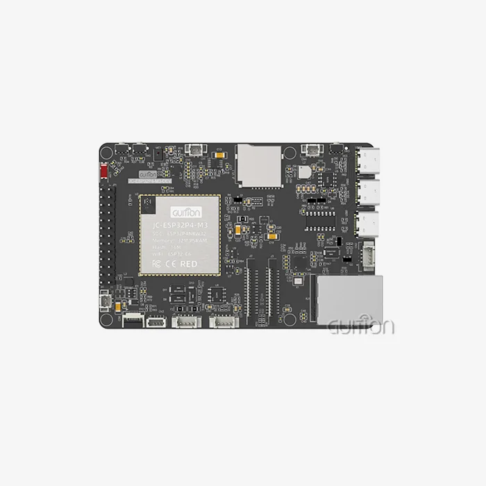

JC-ESP32P4-M3-DEV
Guition · ESP32P4 display module
JC-ESP32P4-M3-DEV is an 800x1280 ESP32 display board by Guition based on the ESP32-P4 with 16MB flash, 32MB PSRAM.
Features, ports & interfaces
- MIPI-DSI display
- 32 MB PSRAM
- 16 MB flash
- Wi-Fi 6 (802.11ax, 2.4 GHz) via ESP32-C6 co-processor – version from the ESP32-C6 datasheet
- Bluetooth 5.3 (LE) via ESP32-C6 co-processor – version from the ESP32-C6 datasheet
- Thread (802.15.4) – IEEE 802.15.4 radio of the ESP32-C6 co-processor – SoC capability per the Espressif datasheet; needs firmware support
- Zigbee (802.15.4) – IEEE 802.15.4 radio of the ESP32-C6 co-processor – SoC capability per the Espressif datasheet; needs firmware support
- Matter-capable radio (Wi-Fi / Thread) – ESP32-C6 co-processor capability per the Espressif datasheet; firmware-dependent
- MIPI-CSI camera interface with ISP
Specifications
| Parameter | Value | Source |
|---|---|---|
| Resolution | 800x1280 | source |
| Shape | Rectangular | |
| Display interface | MIPI-DSI | source |
| Touch | None | source |
| MCU / SoC | ESP32-P4NRW32 | source |
| MCU family | ESP32-P4 | |
| Co-processor | ESP32-C6 | |
| CPU frequency | 400MHz | source |
| Flash | 16MB | source |
| PSRAM | 32MB | source |
| SRAM | 768KB_HP 16KB_LP | source |
| Wi-Fi | Yes (via ESP32-C6) | source |
| Bluetooth | Yes (via ESP32-C6) | source |
| Category | ESP32-P4 Display Module | |
| Camera | MIPI-CSI with ISP | source |
| Connectivity | Wi-Fi 6, Bluetooth 5.0 | source |
| Dimensions | 92×62mm | source |
| Expansion / IO | USB 2.0 OTG HS, SDIO 3.0, I2S, I2C, UART, TWAI, LED PWM, MCPWM, RMT, ADC | source |
| Interface detail | MIPI-DSI, SPI | |
| Memory | 768KB HP L2MEM, 32KB LP SRAM, 8KB TCM | source |
| Operating temp. | -20°C to +70°C | source |
| ROM | 128KB | source |
| Vendor | Guition | |
| Operating voltage | 5V DC | source |
Official links & documentation
Files
Offline copies are available on the interactive page.